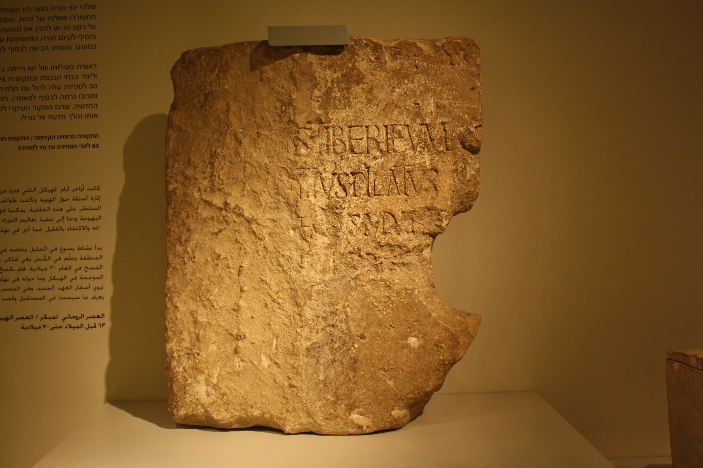

La muerte de Jesús es, paradójicamente, lo más seguro de su vida. Fue crucificado por Roma, y sabemos por qué. Aquí la historia pisa terreno firme —y distingue el hecho de su interpretación—.
Hay una ironía en el estudio del Jesús histórico: el episodio mejor establecido de toda su vida es su muerte. La crucifixión de Jesús es uno de los hechos más firmes de la historia antigua —más seguro que muchos datos de emperadores y generales—. En esta entrega reconstruimos cómo y por qué llegó a la cruz, separando con cuidado lo que la historia puede afirmar de lo que pertenece a la interpretación teológica.
La crucifixión de Jesús cumple todos los criterios de historicidad a la vez. Está en múltiples fuentes independientes (los cuatro evangelios, Pablo, y las fuentes no cristianas Tácito y Josefo). Y sobre todo, cumple de forma extrema el criterio de dificultad: la crucifixión era la ejecución más vergonzosa e infamante del mundo romano, reservada a esclavos y sediciosos. Que el mesías esperado muriera así era un escándalo para la mentalidad judía —"un mesías crucificado" era casi una contradicción—.
Nadie que inventara un mesías lo habría hecho terminar en una cruz. El hecho de que los cristianos tuvieran que explicar esa muerte vergonzosa —convertirla en victoria— demuestra que no pudieron evitarla: ocurrió de verdad. La cruz no es propaganda; es el dato duro que la fe tuvo que interpretar.
¿Por qué acabó Jesús en la cruz? La reconstrucción histórica más aceptada encadena varios factores. Jesús subió a Jerusalén para la Pascua, la fiesta que llenaba la ciudad de peregrinos y de tensión mesiánica —el momento más vigilado del año por Roma—. Allí protagonizó un incidente en el Templo (el episodio de los cambistas), un gesto provocador contra el corazón económico y religioso del poder.
El dato del letrero es históricamente revelador: indica que, a ojos de Roma, Jesús murió como un pretendiente mesiánico políticamente peligroso. Fuera cual fuera su mensaje real, el "reino de Dios" sonaba, en la Judea ocupada, a desafío al reino del César.

Aquí la serie tiene que hacer su distinción más cuidadosa. Que Jesús fue crucificado bajo Pilato es historia firme. Ahora bien, qué significó esa muerte —expiación de los pecados, sacrificio redentor, victoria sobre el pecado y la muerte— es interpretación teológica, elaborada después por sus seguidores. La historia registra la ejecución; la teología le da sentido salvífico. Son dos planos distintos, y confundirlos es un error de método.
Lo mismo vale para la resurrección. Que Jesús murió y fue sepultado pertenece al terreno histórico. Que resucitó al tercer día es una afirmación de fe —la afirmación central del cristianismo— sobre la que el método histórico no puede pronunciarse: no puede probarla ni refutarla, porque escapa a lo que la evidencia documental permite examinar. Lo que el historiador sí constata es un hecho posterior innegable: que los discípulos creyeron haberlo visto vivo, y que esa convicción cambió el mundo. Pero eso es ya la próxima entrega.
Jesús fue crucificado por Roma como agitador político (el letrero decía "Rey de los judíos"), tras un incidente en el Templo durante la Pascua. Que murió en la cruz es de lo más seguro de la historia antigua. Qué significa esa muerte —y si resucitó— ya es interpretación de fe, sobre la que la historia no se pronuncia.
La muerte de Jesús es el ancla histórica de toda su figura: un predicador galileo del reino de Dios que subió a Jerusalén en Pascua, chocó con las autoridades del Templo y con Roma, y fue crucificado por Pilato como pretendiente mesiánico. Todo ello, sólido y bien atestiguado. La honestidad del historiador está en detenerse justo ahí: en el hecho, sin invadir el terreno del significado, que pertenece a la fe.
Y sin embargo, la historia no termina en la cruz —ni histórica ni humanamente—. Porque algo ocurrió después que transformó a un grupo de discípulos derrotados en el germen de una religión mundial. Cómo un predicador ejecutado se convirtió en el Cristo adorado por millones es el tema del último episodio.
La crucifixión de Jesús bajo Poncio Pilato (c. 30-33) es uno de los hechos mejor establecidos de la historia antigua, atestiguado por fuentes cristianas y no cristianas. La "Piedra de Pilato" (Cesarea, 1961) confirma la existencia histórica del prefecto. El incidente del Templo y el letrero ("titulus") con el cargo político son ampliamente aceptados como históricos.
Sobre las responsabilidades en la muerte de Jesús: el consenso histórico subraya que fue una ejecución romana por sedición (Roma tenía el monopolio de la crucifixión). Este blog rechaza expresamente cualquier lectura de "culpa colectiva" sobre el pueblo judío, una interpretación históricamente infundada y con consecuencias trágicas. Las autoridades implicadas fueron un grupo concreto en un momento concreto.
La resurrección se presenta como afirmación de fe fuera del alcance del método histórico, que no la afirma ni la niega. Este artículo respeta plenamente su centralidad para el cristianismo.